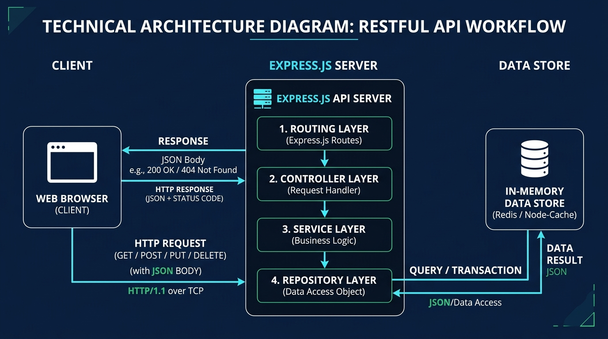
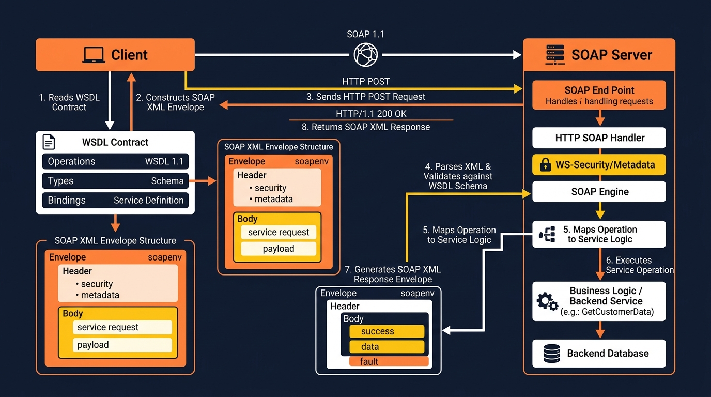
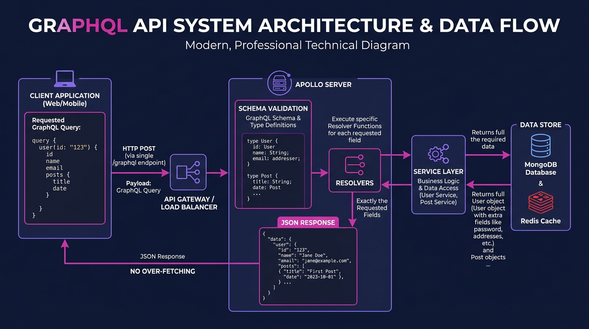
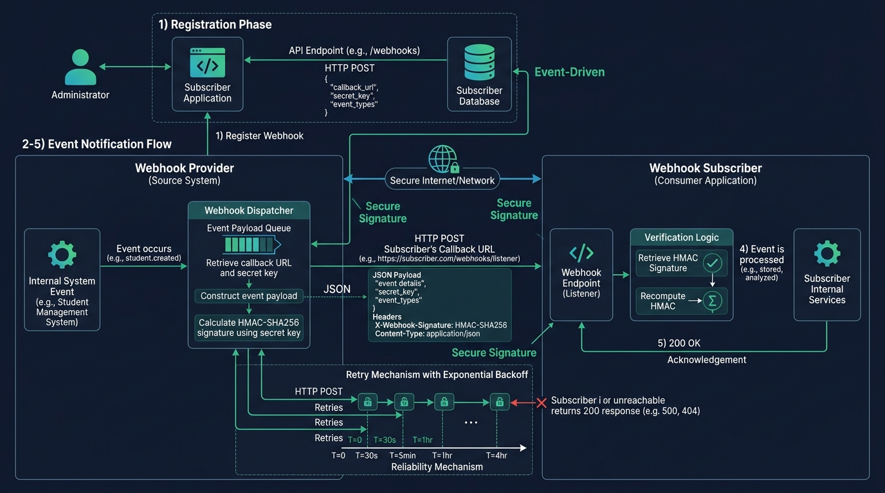
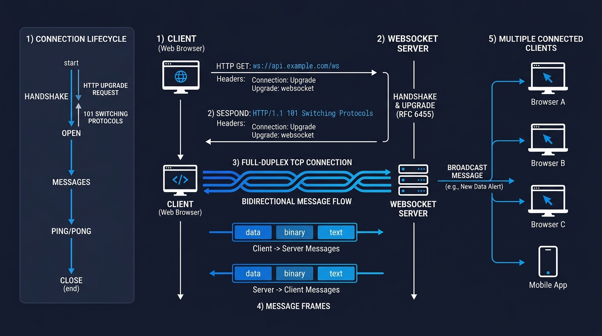
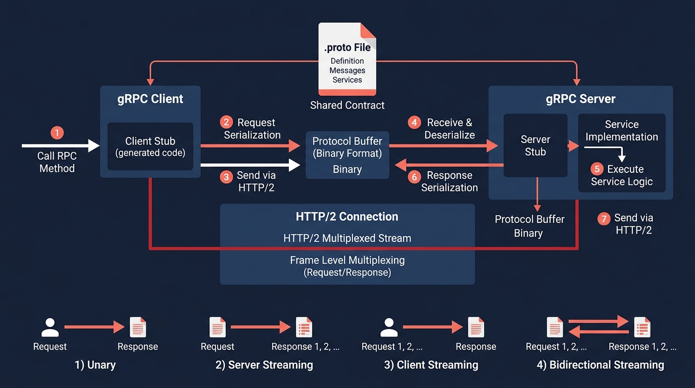

🌐
API Architectures
Research, Implementation & Comparative Analysis
Table of Contents
- Introduction
- What Are APIs?
- Why APIs Matter
- Assignment Objective
- Common Application: Student Management System
- Chapter 1 — RESTful API
- 1.1 Theory & Architecture
- 1.2 Communication Protocol
- 1.3 Request & Response Flow
- 1.4 Implementation Details
- 1.5 Architecture Diagram
- Chapter 2 — SOAP API
- 2.1 Theory & Architecture
- 2.2 Communication Protocol
- 2.3 Request & Response Flow
- 2.4 Implementation Details
- 2.5 Architecture Diagram
- Chapter 3 — GraphQL API
- 3.1 Theory & Architecture
- 3.2 Communication Protocol
- 3.3 Request & Response Flow
- 3.4 Implementation Details
- 3.5 Architecture Diagram
- Chapter 4 — Webhooks
- 4.1 Theory & Architecture
- 4.2 Communication Protocol
- 4.3 Request & Response Flow
- 4.4 Implementation Details
- 4.5 Architecture Diagram
- Chapter 5 — WebSockets
- 5.1 Theory & Architecture
- 5.2 Communication Protocol
- 5.3 Request & Response Flow
- 5.4 Implementation Details
- 5.5 Architecture Diagram
- Chapter 6 — gRPC
- 6.1 Theory & Architecture
- 6.2 Communication Protocol
- 6.3 Request & Response Flow
- 6.4 Implementation Details
- 6.5 Architecture Diagram
- Comparative Analysis
- Comprehensive Comparison Table
- Decision Matrix
- Conclusion
- Key Learnings
- Architecture Recommendations
- Challenges Encountered
- Future Improvements
- References
What Are APIs?
An Application Programming Interface (API) is a set of defined rules, protocols, and tools that enable different software applications to communicate with each other. APIs act as intermediaries — they define the methods and data formats that applications use to request and exchange information, abstracting the complexity of underlying implementations.
In modern software engineering, APIs are the backbone of distributed systems, microservices architectures, mobile applications, and cloud computing platforms. They enable modular development where teams can build and deploy components independently, as long as they conform to the agreed-upon API contract.
Why APIs Matter
- Interoperability: APIs allow systems built in different languages and platforms to communicate seamlessly.
- Scalability: Well-designed APIs enable horizontal scaling of individual services.
- Modularity: APIs enforce separation of concerns, allowing teams to work independently.
- Reusability: A single API can serve web, mobile, and IoT clients simultaneously.
- Innovation: Third-party APIs enable rapid development by leveraging existing services.
Assignment Objective
This technical report documents the research, implementation, and comparative analysis of six modern API communication architectures:
- RESTful API — Resource-based HTTP architecture
- SOAP API — XML-based protocol with strict contracts
- GraphQL API — Query language with schema-driven data fetching
- Webhooks — Event-driven HTTP callbacks
- WebSockets — Persistent full-duplex connections
- gRPC — High-performance binary RPC over HTTP/2
Common Application: Student Management System
To enable a fair and meaningful comparison, all six architectures implement the same application — a Student Management System supporting standard CRUD operations (Create, Read, Update, Delete). The consistent data model used across all implementations is:
| Field | Type | Description |
|---|
| id | String (UUID v4) | Unique identifier |
| name | String | Student's full name |
| email | String | Email address |
| course | String | Enrolled course |
| year | Integer | Academic year (1-4) |
| gpa | Float | Grade Point Average (0.0-4.0) |
Technology Stack
| Component | Technology | Version |
|---|
| Runtime | Node.js | 18+ |
| REST Framework | Express.js | 4.x |
| SOAP | node-soap | 1.x |
| GraphQL | Apollo Server | 4.x |
| WebSockets | ws | 8.x |
| gRPC | @grpc/grpc-js | 1.x |
| HTTP Client | Axios | 1.x |
| Data Storage | In-Memory (Map/Array) | — |
Code Architecture Pattern
All implementations follow a consistent Object-Oriented Programming (OOP) architecture using ES6 classes with the layered pattern:
Model → Repository → Service → Controller / Handler
- Model: Data structure with validation logic
- Repository: Data access layer (in-memory storage, singleton pattern)
- Service: Business logic layer with error handling
- Controller/Handler: Request processing and response formatting
1.1 Theory & Architecture
REST (Representational State Transfer) is an architectural style for designing networked applications, introduced by Roy Fielding in his 2000 doctoral dissertation. REST defines a set of constraints for creating web services that are scalable, stateless, and leverage the existing infrastructure of the World Wide Web.
REST is built upon six guiding principles:
- Client-Server Separation: The user interface and data storage concerns are strictly decoupled, allowing them to evolve independently.
- Statelessness: Every client request must contain all information needed for the server to understand and process it. No session state is stored on the server between requests.
- Cacheability: Responses must define themselves as cacheable or non-cacheable to improve network efficiency.
- Uniform Interface: Resources are identified by URIs, manipulated through standard HTTP methods, and represented in standard formats (JSON, XML).
- Layered System: The architecture allows for intermediary servers (proxies, load balancers) between client and server.
- Code on Demand (Optional): Servers can extend client functionality by transferring executable code.
Resource-Based Design
In REST, every entity is treated as a resource identified by a unique URI. CRUD operations are mapped directly to HTTP methods:
| HTTP Method | Operation | URI Pattern | Description |
|---|
GET | Read | /api/students | Retrieve all students |
GET | Read | /api/students/:id | Retrieve a single student |
POST | Create | /api/students | Create a new student |
PUT | Update | /api/students/:id | Update an existing student |
DELETE | Delete | /api/students/:id | Delete a student |
1.2 Communication Protocol
📡 Protocol Details
- Transport Protocol: HTTP/1.1 or HTTP/2 over TCP/TLS
- Data Format: JSON (application/json)
- Authentication: JWT, OAuth 2.0, API Keys
- Content Negotiation: Accept and Content-Type headers
1.3 Request & Response Flow
Request Example — Create a Student
POST /api/students HTTP/1.1
Host: localhost:3001
Content-Type: application/json
{
"name": "Fatima Zahra",
"email": "fatima.zahra@university.edu",
"course": "Data Science",
"year": 1,
"gpa": 3.8
}
Response Example
HTTP/1.1 201 Created
Content-Type: application/json
{
"success": true,
"data": {
"id": "a1b2c3d4-e5f6-7890-abcd-ef1234567890",
"name": "Fatima Zahra",
"email": "fatima.zahra@university.edu",
"course": "Data Science",
"year": 1,
"gpa": 3.8
}
}
HTTP Status Codes Used
| Code | Meaning | Usage |
|---|
200 | OK | Successful GET, PUT operations |
201 | Created | Successful POST (resource created) |
204 | No Content | Successful DELETE |
400 | Bad Request | Validation errors |
404 | Not Found | Resource doesn't exist |
500 | Internal Server Error | Server-side errors |
1.4 Implementation Details
The REST API is implemented using Express.js on port 3001. Key implementation classes:
Student Model (Student.js)
/**
* Student entity model with validation
*/
class Student {
constructor({ id, name, email, course, year, gpa }) {
this.id = id || uuidv4();
this.name = name;
this.email = email;
this.course = course;
this.year = year;
this.gpa = gpa;
}
validate() {
const errors = [];
if (!this.name) errors.push('Name is required');
if (!this.email) errors.push('Email is required');
if (!this.course) errors.push('Course is required');
// ... additional validation
return errors;
}
}
StudentController (Controller Pattern)
/**
* REST controller handling HTTP requests
*/
class StudentController {
static async getAllStudents(req, res) {
try {
const students = studentService.getAllStudents();
res.status(200).json({ success: true, data: students });
} catch (error) {
res.status(500).json({ success: false, error: error.message });
}
}
static async createStudent(req, res) {
try {
const student = studentService.createStudent(req.body);
res.status(201).json({ success: true, data: student });
} catch (error) {
res.status(400).json({ success: false, error: error.message });
}
}
}
Folder Structure
rest-api/
├── package.json
├── server.js
├── models/
│ └── Student.js
├── data/
│ └── StudentRepository.js
├── services/
│ └── StudentService.js
├── controllers/
│ └── StudentController.js
├── routes/
│ └── studentRoutes.js
└── README.md
✅ Advantages
- Simple, intuitive, and widely adopted
- Leverages standard HTTP infrastructure (caching, load balancing)
- Stateless — easy horizontal scaling
- Native browser support
- Rich ecosystem of tools (Postman, Swagger, curl)
⚠️ Limitations
- Over-fetching: Returns entire resource even when only a few fields are needed
- Under-fetching: Related data requires multiple round-trips (N+1 problem)
- No built-in real-time capabilities
- No standardized schema enforcement without external tools
1.5 Architecture Diagram

Figure 1.1 — RESTful API Architecture: Client-Server communication over HTTP with JSON
2.1 Theory & Architecture
SOAP (Simple Object Access Protocol) is a W3C-standardized messaging protocol for exchanging structured information in web services. Unlike REST (an architectural style), SOAP is a strict protocol with formal rules, error handling, and enterprise-grade security features.
SOAP is built around four key components:
- SOAP Envelope: The root XML element that wraps the entire message.
- SOAP Header (Optional): Contains metadata such as authentication tokens, transaction IDs, and routing information.
- SOAP Body (Required): Contains the actual request or response payload — the method call and its parameters.
- SOAP Fault: A standardized error-handling structure within the Body for reporting processing errors.
WSDL — Web Services Description Language
Every SOAP service is described by a WSDL document — an XML file that serves as a formal contract defining all available operations, input/output message formats, data types, binding information, and service endpoint URLs. Clients read the WSDL to understand how to interact with the service.
2.2 Communication Protocol
📡 Protocol Details
- Transport Protocol: HTTP/HTTPS (POST exclusively), also supports SMTP, JMS, TCP
- Data Format: XML (text/xml or application/soap+xml)
- Contract: WSDL 1.1 (XML service description)
- Security: WS-Security (XML encryption, digital signatures)
- Transactions: WS-AtomicTransaction for distributed ACID compliance
2.3 Request & Response Flow
SOAP Request — GetStudent
<?xml version="1.0" encoding="UTF-8"?>
<soap:Envelope
xmlns:soap="http://schemas.xmlsoap.org/soap/envelope/"
xmlns:stu="http://example.com/studentservice">
<soap:Header/>
<soap:Body>
<stu:GetStudent>
<stu:id>student-uuid-here</stu:id>
</stu:GetStudent>
</soap:Body>
</soap:Envelope>
SOAP Response
<?xml version="1.0" encoding="UTF-8"?>
<soap:Envelope
xmlns:soap="http://schemas.xmlsoap.org/soap/envelope/">
<soap:Body>
<GetStudentResponse>
<student>
<id>student-uuid-here</id>
<name>Ahmed Ali</name>
<email>ahmed.ali@university.edu</email>
<course>Computer Science</course>
<year>3</year>
<gpa>3.7</gpa>
</student>
</GetStudentResponse>
</soap:Body>
</soap:Envelope>
SOAP Fault (Error Response)
<soap:Envelope xmlns:soap="http://schemas.xmlsoap.org/soap/envelope/">
<soap:Body>
<soap:Fault>
<faultcode>soap:Client</faultcode>
<faultstring>Student not found</faultstring>
<detail>No student exists with the given ID</detail>
</soap:Fault>
</soap:Body>
</soap:Envelope>
2.4 Implementation Details
The SOAP API is implemented using node-soap on port 3002, with a complete WSDL file defining all five operations.
SOAP Operations
| Operation | Input | Output |
|---|
| GetStudents | Empty | List of Student objects |
| GetStudent | id (string) | Single Student object |
| AddStudent | Student data | Created Student object |
| UpdateStudent | id + Student data | Updated Student object |
| DeleteStudent | id (string) | Confirmation message |
Folder Structure
soap-api/
├── package.json
└── src/
├── server.js
├── models/
│ └── Student.js
├── data/
│ └── StudentRepository.js
├── services/
│ └── StudentSoapService.js
└── wsdl/
└── student.wsdl
✅ Advantages
- Strict formal contract (WSDL) with automatic code generation
- Built-in WS-Security for enterprise-grade encryption & digital signatures
- Protocol-independent — can operate over HTTP, SMTP, JMS, TCP
- Built-in error handling via SOAP Fault
- WS-AtomicTransaction for distributed ACID transactions
⚠️ Limitations
- Heavy XML verbosity — high payload overhead and bandwidth cost
- Complex setup — steep learning curve
- High CPU consumption for XML parsing and serialization
- Poor mobile and browser client support
2.5 Architecture Diagram

Figure 2.1 — SOAP API Architecture: WSDL-driven communication with XML envelopes
3.1 Theory & Architecture
GraphQL is an open-source query language for APIs and a runtime for fulfilling queries with existing data. Developed by Facebook in 2012 and publicly released in 2015, GraphQL provides a more efficient and flexible alternative to REST by allowing clients to request exactly the data they need — nothing more, nothing less.
GraphQL is built on three core concepts:
- Schema Definition Language (SDL): A strongly-typed schema defining all types, queries, mutations, and subscriptions available in the API.
- Queries & Mutations: Queries read data, mutations modify data — both are sent as strings to a single endpoint.
- Resolvers: Functions that determine how to fetch or compute the data for each field in the schema.
Single Endpoint Architecture
Unlike REST where each resource has its own URL, GraphQL serves all operations through a single endpoint (typically /graphql). The client specifies what data it wants in the query string, and the server returns exactly that structure.
3.2 Communication Protocol
📡 Protocol Details
- Transport Protocol: HTTP/HTTPS (POST with query payload)
- Data Format: JSON (both request and response)
- Schema: GraphQL SDL (strongly typed)
- Endpoint: Single URL (e.g., /graphql)
- Real-time: Subscriptions via WebSockets
3.3 Request & Response Flow
Query — Fetch All Students (Selective Fields)
POST /graphql HTTP/1.1
Content-Type: application/json
{
"query": "query { students { id name email gpa } }"
}
Response — Only Requested Fields
{
"data": {
"students": [
{ "id": "uuid-1", "name": "Ahmed Ali", "email": "ahmed.ali@university.edu", "gpa": 3.7 },
{ "id": "uuid-2", "name": "Sara Hassan", "email": "sara.hassan@university.edu", "gpa": 3.9 }
]
}
}
Mutation — Create a Student
{
"query": "mutation($input: CreateStudentInput!) { createStudent(input: $input) { id name } }",
"variables": {
"input": {
"name": "Fatima Zahra",
"email": "fatima@university.edu",
"course": "AI",
"year": 2,
"gpa": 3.85
}
}
}
3.4 Implementation Details
The GraphQL API is implemented using Apollo Server 4 on port 3003 with startStandaloneServer.
Schema Definition
type Student {
id: ID!
name: String!
email: String!
course: String!
year: Int!
gpa: Float!
}
type Query {
students: [Student!]!
student(id: ID!): Student
}
type Mutation {
createStudent(input: CreateStudentInput!): Student!
updateStudent(id: ID!, input: UpdateStudentInput!): Student!
deleteStudent(id: ID!): Boolean!
}
Folder Structure
graphql-api/
├── package.json
└── src/
├── server.js
├── schema/
│ └── typeDefs.js
├── resolvers/
│ └── studentResolvers.js
├── models/
│ └── Student.js
├── services/
│ └── StudentService.js
└── data/
└── StudentRepository.js
✅ Advantages
- Eliminates over-fetching and under-fetching
- Single endpoint reduces API surface complexity
- Strong typing with self-documenting schema
- Powerful developer tools (Apollo Sandbox, introspection)
- Aggregates multiple data sources in one request
⚠️ Limitations
- Complex caching — traditional HTTP caching doesn't work
- N+1 problem requires DataLoader for optimization
- Vulnerable to complex/deep query attacks (DoS)
- Learning curve for schema design and resolver patterns
3.5 Architecture Diagram

Figure 3.1 — GraphQL Architecture: Single endpoint with schema-driven data resolution
4.1 Theory & Architecture
Webhooks are automated HTTP callbacks triggered by specific events in a source system. They provide a push-based (reverse API) communication model: instead of the consumer continuously polling the server for updates, the provider automatically makes an HTTP POST request to a pre-registered URL when an event occurs.
The webhook architecture follows a Publisher-Subscriber pattern:
- Registration: The subscriber provides a callback URL to the publisher.
- Event Trigger: An event occurs in the publisher's system (e.g., student created).
- Payload Delivery: The publisher constructs a JSON payload and POSTs it to the registered URL.
- Acknowledgement: The subscriber processes the event and responds with
200 OK.
- Retry Logic: If delivery fails, the publisher retries with exponential backoff.
4.2 Communication Protocol
📡 Protocol Details
- Transport Protocol: HTTP/HTTPS (POST method)
- Data Format: JSON payload with event type and data
- Security: HMAC-SHA256 signature verification
- Delivery: At-least-once with retry mechanism
- Direction: Unidirectional (publisher → subscriber)
4.3 Request & Response Flow
Step 1 — Register Webhook
POST /api/webhooks/register HTTP/1.1
Content-Type: application/json
{
"url": "http://localhost:3005/webhooks/student-events",
"events": ["student.created", "student.updated", "student.deleted"]
}
Step 2 — Event Triggers Webhook Delivery
POST /webhooks/student-events HTTP/1.1
Content-Type: application/json
X-Webhook-Signature: sha256=a1b2c3d4e5f6...
X-Webhook-Event: student.created
X-Webhook-Timestamp: 2026-08-01T15:30:00.000Z
{
"event": "student.created",
"timestamp": "2026-08-01T15:30:00.000Z",
"data": {
"id": "uuid-new",
"name": "Fatima Zahra",
"email": "fatima@university.edu",
"course": "Data Science",
"year": 1,
"gpa": 3.8
}
}
HMAC Signature Verification
The sender signs the payload using a shared secret key and the HMAC-SHA256 algorithm. The receiver independently computes the signature and compares it to ensure the payload hasn't been tampered with:
const crypto = require('crypto');
const signature = crypto
.createHmac('sha256', 'webhook-secret-key-2026')
.update(JSON.stringify(payload))
.digest('hex');
// Compare: sha256=${signature} === request.headers['x-webhook-signature']
4.4 Implementation Details
The webhook system consists of two separate services:
| Service | Port | Role |
|---|
| Sender | 3004 | REST API + webhook dispatcher |
| Receiver | 3005 | Webhook event listener |
Folder Structure
webhooks/
├── package.json
└── src/
├── sender/
│ ├── server.js
│ ├── controllers/
│ │ ├── StudentController.js
│ │ └── WebhookController.js
│ ├── services/
│ │ ├── StudentService.js
│ │ └── WebhookService.js
│ ├── models/ & data/ & routes/
└── receiver/
├── server.js
├── handlers/
│ └── WebhookHandler.js
└── services/
└── SignatureVerifier.js
✅ Advantages
- Real-time event notification — instant delivery
- Zero polling overhead — saves bandwidth and CPU
- Loosely coupled — sender and receiver are independent
- Simple HTTP-based — easy to implement and debug
⚠️ Limitations
- Delivery reliability depends on receiver availability
- Events may arrive out of order
- At-least-once delivery — subscribers must handle idempotency
- Difficult to test locally (requires ngrok or tunneling)
4.5 Architecture Diagram

Figure 4.1 — Webhook Architecture: Event-driven push communication with HMAC verification
5.1 Theory & Architecture
WebSocket is a computer communications protocol providing full-duplex, bi-directional communication channels over a single persistent TCP connection, standardized by the IETF as RFC 6455 in 2011.
Unlike HTTP's request-response model, WebSocket maintains an open connection that allows both client and server to send messages at any time without the overhead of establishing a new connection for each exchange.
Connection Lifecycle
1. HTTP Upgrade Request
→
2. 101 Switching Protocols
→
3. WebSocket Connection Open
4. Bi-directional Messages
⇄
5. Ping/Pong Heartbeats
→
6. Connection Close
5.2 Communication Protocol
📡 Protocol Details
- Protocol: WebSocket (ws:// or wss:// for TLS)
- Handshake: HTTP Upgrade mechanism
- Connection: Persistent TCP, full-duplex
- Frame Overhead: 2-10 bytes per message (vs. kilobytes for HTTP headers)
- Data Format: Text (JSON) or Binary frames
5.3 Request & Response Flow
HTTP Upgrade Handshake
GET /ws HTTP/1.1
Host: localhost:3006
Upgrade: websocket
Connection: Upgrade
Sec-WebSocket-Key: dGhlIHNhbXBsZSBub25jZQ==
Sec-WebSocket-Version: 13
Server Upgrade Response
HTTP/1.1 101 Switching Protocols
Upgrade: websocket
Connection: Upgrade
Sec-WebSocket-Accept: s3pPLMBiTxaQ9kYGzzhZRbK+xOo=
WebSocket Event Messages
// Server broadcasts when student is created:
{
"event": "student:created",
"data": {
"id": "uuid-new",
"name": "Fatima Zahra",
"email": "fatima@university.edu",
"course": "Data Science",
"year": 1,
"gpa": 3.8
},
"timestamp": "2026-08-01T15:30:00.000Z",
"connectedClients": 5
}
5.4 Implementation Details
The WebSocket implementation uses the ws library on port 3006, providing both REST endpoints for CRUD operations and WebSocket connections for real-time broadcasting.
WebSocketService Class
class WebSocketService {
constructor() {
this.clients = new Set();
}
handleConnection(ws) {
this.clients.add(ws);
ws.on('close', () => this.clients.delete(ws));
}
broadcast(event, data) {
const message = JSON.stringify({ event, data, timestamp: new Date() });
this.clients.forEach(client => {
if (client.readyState === WebSocket.OPEN) {
client.send(message);
}
});
}
}
Browser Client
A professional dark-themed HTML client is included at src/public/index.html featuring:
- Real-time event notification panel
- Connection status indicator (connected/disconnected)
- Forms to trigger CRUD operations via REST
- Auto-reconnection with exponential backoff
✅ Advantages
- Ultra-low latency — sub-millisecond communication
- True bi-directional — server can push data without client request
- Minimal bandwidth — 2-10 byte frame headers vs. kilobytes for HTTP
- Ideal for real-time applications (chat, gaming, live feeds)
⚠️ Limitations
- Stateful connections — harder to scale horizontally
- Firewalls and proxies may block persistent connections
- Memory-intensive — each connection consumes server resources
- No built-in message acknowledgement or retry
5.5 Architecture Diagram

Figure 5.1 — WebSocket Architecture: Persistent full-duplex connection with broadcast messaging
6.1 Theory & Architecture
gRPC (Google Remote Procedure Call) is a modern, high-performance open-source RPC framework developed by Google in 2015. It uses Protocol Buffers (protobuf) as its Interface Definition Language (IDL) and binary serialization format, operating over HTTP/2 for multiplexed, low-latency communication.
gRPC supports four communication patterns:
- Unary RPC: Single request → single response (like REST)
- Server Streaming: Single request → stream of responses
- Client Streaming: Stream of requests → single response
- Bidirectional Streaming: Stream of requests ⇄ stream of responses
Protocol Buffers
Protocol Buffers are Google's language-neutral, platform-neutral mechanism for serializing structured data. They define a .proto file that serves as a contract between client and server, describing message structures and service methods.
6.2 Communication Protocol
📡 Protocol Details
- Transport Protocol: HTTP/2 over TCP/TLS
- Data Format: Protocol Buffers (binary serialization)
- IDL: .proto files (proto3 syntax)
- Multiplexing: Multiple streams over single TCP connection
- Header Compression: HPACK compression
6.3 Request & Response Flow
Protocol Buffer Definition (student.proto)
syntax = "proto3";
package student;
message Student {
string id = 1;
string name = 2;
string email = 3;
string course = 4;
int32 year = 5;
float gpa = 6;
}
message StudentId { string id = 1; }
message Empty {}
message StudentList { repeated Student students = 1; }
service StudentService {
rpc GetStudents (Empty) returns (StudentList);
rpc GetStudent (StudentId) returns (Student);
rpc CreateStudent (CreateStudentRequest) returns (Student);
rpc UpdateStudent (UpdateStudentRequest) returns (Student);
rpc DeleteStudent (StudentId) returns (DeleteResponse);
}
Client RPC Call
// Using promisified gRPC client
const student = await client.GetStudent({ id: 'student-uuid' });
console.log(student.name); // "Ahmed Ali"
console.log(student.course); // "Computer Science"
Binary vs JSON Comparison
| Aspect | JSON (REST) | Protocol Buffers (gRPC) |
|---|
| Format | Text (human-readable) | Binary (machine-optimized) |
| Payload Size | ~200 bytes | ~50-80 bytes |
| Parse Speed | Slower (string parsing) | 5-10x faster |
| Schema | Optional (OpenAPI/Swagger) | Required (.proto) |
| Debugging | Easy (readable text) | Requires gRPC tools |
6.4 Implementation Details
The gRPC API uses @grpc/grpc-js with dynamic proto loading via @grpc/proto-loader on port 50051.
Folder Structure
grpc/
├── package.json
└── src/
├── server.js
├── client.js
├── proto/
│ └── student.proto
├── models/
│ └── Student.js
├── services/
│ └── StudentGrpcService.js
└── data/
└── StudentRepository.js
✅ Advantages
- Extreme performance — binary serialization 5-10x faster than JSON
- HTTP/2 multiplexing — hundreds of concurrent calls over one connection
- Strong type safety — .proto files generate type-safe stubs in 11+ languages
- Native streaming support — client, server, and bidirectional
- Small payload size — significantly reduces bandwidth usage
⚠️ Limitations
- No native browser support — requires gRPC-Web proxy
- Non-human-readable binary format — harder to debug
- Steeper learning curve — Protocol Buffers IDL required
- Limited tooling compared to REST ecosystem
6.5 Architecture Diagram

Figure 6.1 — gRPC Architecture: Binary RPC over HTTP/2 with Protocol Buffer contracts
7.1 Concept and Purpose
To effectively demonstrate the architectural differences between the six implemented APIs, a suite of Unified Web UI Dashboards was developed. The core philosophy behind this design decision is to prove that the frontend user experience remains completely isolated from the backend architectural choices.
Whether the backend communicates via SOAP XML, protocol buffers, or WebSockets, the user interfaces are visually identical. The true distinction is only revealed within the Event Log, which exposes the underlying network activity.
7.2 Architecture of the Dashboards
- Frontend Technology: Vanilla HTML, CSS, and modern asynchronous JavaScript (ES6+ Modules, Async/Await).
- Styling: A modern, dark-mode "Glassmorphism" aesthetic with vibrant accents (inter-font, glowing buttons, smooth micro-animations).
- Event Driven: Real-time terminal-like Event Logs built directly into the UI to visualize standard HTTP verbs, GraphQL payloads, or WebSocket broadcasts without requiring developer tools.
7.3 API Bridges for Browser Compatibility
Modern web browsers (like Chrome or Safari) cannot natively execute certain backend protocols (like gRPC's binary HTTP/2 frames or pure SOAP envelopes without CORS/loopback issues). To solve this, specific architectures employ an API Bridge pattern:
- gRPC UI Bridge: A lightweight Express server (Port 3007) that acts as a middleman, translating standard browser JSON into protocol buffers and forwarding them to the gRPC server (Port 50051).
- SOAP UI Bridge: Due to Node.js
node-soap loopback deadlocks, a dedicated Express server (Port 3008) directly invokes the SOAP Service layer, bypassing internal HTTP recursion, while the standalone SOAP server remains accessible (Port 3002).
✅ Key Takeaway
The inclusion of these visual dashboards eliminates the need for third-party tools like Postman, cURL, or SoapUI during evaluations. Evaluators can instantly interact with all six APIs directly from their browser, experiencing the real-time differences in transport mechanisms.
Comparison Table
| Criteria |
REST |
SOAP |
GraphQL |
Webhooks |
WebSockets |
gRPC |
| Architecture |
Resource-based, stateless client-server |
Protocol-based, contract-driven (WSDL) |
Schema-driven, single endpoint query language |
Event-driven publisher-subscriber (push) |
Persistent full-duplex bidirectional channel |
Schema-first RPC with binary serialization |
| Protocol |
HTTP/1.1 or HTTP/2 |
HTTP, SMTP, JMS, TCP |
HTTP (POST) |
HTTP (POST) |
WebSocket (ws/wss) over TCP |
HTTP/2 |
| Input Format |
JSON |
XML (SOAP Envelope) |
JSON (query string) |
JSON (event payload) |
JSON or Binary frames |
Protocol Buffers (binary) |
| Output Format |
JSON |
XML (SOAP Envelope) |
JSON (exact fields requested) |
JSON (event payload) |
JSON or Binary frames |
Protocol Buffers (binary) |
| Primary Use Cases |
Web/mobile backends, public APIs, CRUD apps |
Banking, payments, enterprise integrations, government |
SPAs, mobile apps, BFF layers, complex data graphs |
Payment notifications, CI/CD triggers, async events |
Chat, gaming, live feeds, collaborative editing |
Microservices, IoT, inter-service communication |
| Advantages |
Simple, cacheable, widely adopted, scalable |
Strict contracts, WS-Security, ACID transactions, protocol-independent |
No over/under-fetching, strong typing, single endpoint, introspection |
Real-time push, zero polling, loosely coupled |
Ultra-low latency, bidirectional, minimal overhead |
Fastest performance, multiplexing, streaming, type-safe |
| Limitations |
Over/under-fetching, no real-time, no schema enforcement |
Verbose XML, high CPU, complex, poor mobile support |
Cache complexity, N+1 problem, DoS risk from complex queries |
Delivery risks, out-of-order, duplicate events, hard to test locally |
Stateful, scaling challenges, firewall issues, memory-intensive |
No browser support, non-readable, steep learning curve |
| Performance |
Good (with HTTP caching) |
Poor (XML parsing overhead) |
Good (client-optimized, backend varies) |
Excellent (event-driven, minimal resources) |
Excellent (ultra-low latency) |
Best (binary, HTTP/2 multiplexing) |
| Security |
HTTPS, JWT, OAuth 2.0, API Keys, CORS |
WS-Security, XML signatures, XML encryption |
Query depth limits, complexity analysis, auth middleware |
HMAC signatures, IP whitelisting, HTTPS |
WSS (TLS), token auth on handshake, origin validation |
TLS channels, token metadata, server interceptors |
| GitHub Branch |
rest-api |
soap-api |
graphql-api |
webhooks |
websockets |
grpc |
Decision Matrix — When to Use Which API
| Scenario | Recommended API | Reason |
|---|
| Public web API for a startup | REST | Simple, widely understood, great tooling |
| Banking transaction system | SOAP | ACID compliance, WS-Security, strict contracts |
| Mobile app with complex data needs | GraphQL | Fetch exact data needed, reduce bandwidth |
| Payment status notifications | Webhooks | Event-driven push without polling |
| Real-time chat application | WebSockets | Persistent bidirectional, ultra-low latency |
| Microservices internal communication | gRPC | Maximum performance, type safety, streaming |
| IoT sensor data streaming | gRPC | Streaming RPC, small binary payloads |
| Third-party SaaS integration | REST + Webhooks | REST for CRUD, webhooks for event notifications |
Key Learnings
Through researching and implementing six distinct API architectures, several critical insights emerged about modern software communication:
- No One-Size-Fits-All: Each API architecture excels in specific scenarios. REST is ideal for public-facing CRUD APIs, while gRPC dominates in high-performance microservices communication. The choice depends on factors like performance requirements, client types, and team expertise.
- Paradigm Diversity: APIs operate on fundamentally different paradigms — request-response (REST, SOAP, GraphQL), event-driven push (Webhooks), persistent bidirectional channels (WebSockets), and remote procedure calls (gRPC). Understanding these paradigms is essential for architectural decisions.
- Trade-offs Are Inevitable: Higher performance (gRPC) comes at the cost of browser compatibility. Richer querying (GraphQL) introduces caching complexity. Enterprise features (SOAP) add verbosity and overhead.
- Security Is Architecture-Specific: Each API type requires tailored security measures — from HMAC signatures in webhooks to WS-Security in SOAP to origin validation in WebSockets.
- OOP Patterns Are Universal: The layered architecture (Model → Repository → Service → Controller) proved applicable across all six implementations, demonstrating that good software design principles transcend specific API technologies.
Architecture Recommendations
| Requirement | Best Choice | Alternative |
|---|
| General-purpose web API | REST | GraphQL |
| Enterprise with strict compliance | SOAP | REST with OpenAPI |
| Complex data requirements | GraphQL | REST with query parameters |
| Async event notifications | Webhooks | WebSockets |
| Real-time bidirectional | WebSockets | gRPC streaming |
| Maximum throughput | gRPC | REST over HTTP/2 |
Challenges Encountered
- SOAP WSDL Complexity: Writing a valid WSDL document from scratch requires precise XML namespace management and type definitions. The strict contract nature of SOAP means any mismatch between WSDL and implementation causes cryptic errors.
- GraphQL N+1 Problem: Without proper batching (DataLoader), nested queries can trigger exponential database calls.
- WebSocket State Management: Managing persistent connections, handling disconnections gracefully, and implementing heartbeats required careful engineering.
- gRPC Tooling on Windows: While @grpc/grpc-js eliminates native compilation issues, debugging binary Protocol Buffer payloads requires specialized tools.
- Webhook Testing: Testing webhook delivery locally required either running both services on different ports or using tunneling tools like ngrok.
Future Improvements
- Database Integration: Replace in-memory storage with MongoDB or PostgreSQL for persistent data.
- Authentication: Implement JWT-based authentication across all API types.
- Docker Containerization: Package each API as a Docker container for easy deployment.
- Automated Testing: Add unit tests (Jest) and integration tests for each implementation.
- API Gateway: Implement an API gateway that routes to different backend API types.
- Performance Benchmarking: Conduct formal performance tests comparing latency, throughput, and resource usage across all six architectures.
- gRPC-Web: Add browser support for gRPC via Envoy proxy.
Official Documentation
- Fielding, R. T. (2000). Architectural Styles and the Design of Network-based Software Architectures. Doctoral dissertation, University of California, Irvine.
https://www.ics.uci.edu/~fielding/pubs/dissertation/rest_arch_style.htm
- Express.js Documentation — https://expressjs.com/
- W3C SOAP 1.1 Specification — https://www.w3.org/TR/2000/NOTE-SOAP-20000508/
- WSDL 1.1 Specification — https://www.w3.org/TR/wsdl
- GraphQL Official Specification — https://spec.graphql.org/
- Apollo Server Documentation — https://www.apollographql.com/docs/apollo-server/
- RFC 6455: The WebSocket Protocol — https://tools.ietf.org/html/rfc6455
- gRPC Official Documentation — https://grpc.io/docs/
- Protocol Buffers Documentation — https://developers.google.com/protocol-buffers
Node.js Libraries
- node-soap — https://github.com/vpulim/node-soap
- ws (WebSocket library) — https://github.com/websockets/ws
- @grpc/grpc-js — https://www.npmjs.com/package/@grpc/grpc-js
- @grpc/proto-loader — https://www.npmjs.com/package/@grpc/proto-loader
- Axios HTTP Client — https://axios-http.com/
- uuid — https://www.npmjs.com/package/uuid
Learning Resources
- MDN Web Docs — HTTP Overview: https://developer.mozilla.org/en-US/docs/Web/HTTP/Overview
- MDN Web Docs — WebSocket API: https://developer.mozilla.org/en-US/docs/Web/API/WebSockets_API
- REST API Tutorial — https://restfulapi.net/
- GraphQL.org — Introduction: https://graphql.org/learn/
- gRPC — Introduction to gRPC: https://grpc.io/docs/what-is-grpc/introduction/